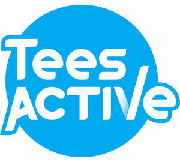

Trade Mark Journal No.2025/024 13 June 2025
UK00004209798 27 May 2025 (41,43)

- Class 41
- Provision and operation of sports and recreation wet and dry facilities; fitness centre services; health club services; physical education; provision of information relating to health and fitness; fitness instruction; education and training services relating to sports and leisure; aerobics and other physical exercises; coached activities; supplying information regarding the use of sports apparatus and the exercise of sports; gymnastic instruction, leisure and cultural services, including learning for the disabled; publishing; photography; videotaping; production of video and audio tapes; amusement and sports facilities; gymnasium and health club facilities and services related thereto; provision of conference and meeting facilities; organisation of sporting activities; provision, hire, lending and rental of sports, leisure and educational facilities; hire, leasing and rental of sports equipment; entertainment services and educational services all relating to sports and leisure centres; provision and operation of recreation and sport facilities; provision of teaching and facilities for sport and recreational activities; training services relating to first aid and health and safety; children's entertainment services, children's educational services, all provided in a crèche.
- Class 43
- Nursery services; day care nursery services; children's nursery services; child care services; arrangement, provision, organisation of child care and/or nursery facilities; arranging for the provision of nursery services; crèche services; child minding services; services for providing food and drink; cafes; bars; catering services for the provision of food and drink; provision of catering facilities; room hire; accommodation services for tourists; provision of holiday accommodation.
Tees Active Ltd